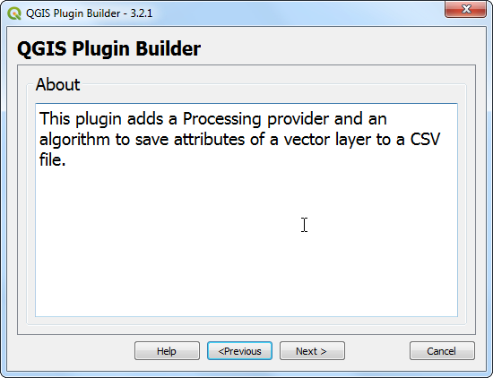
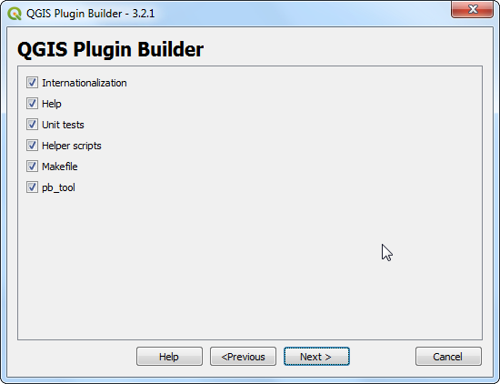
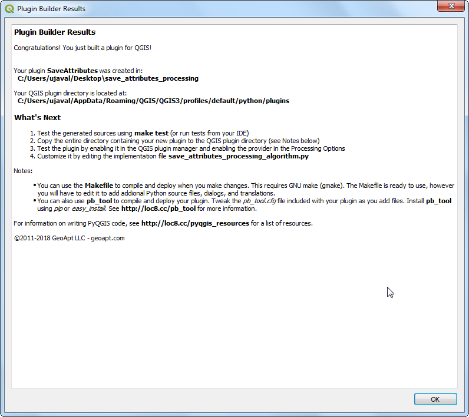
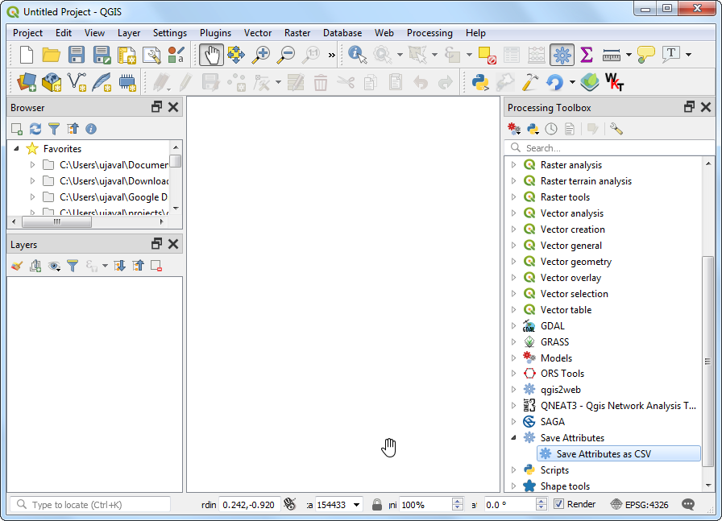
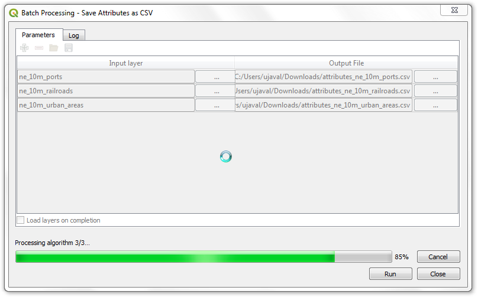
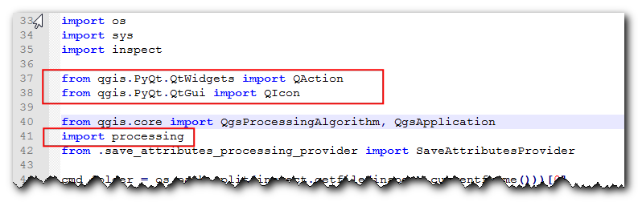
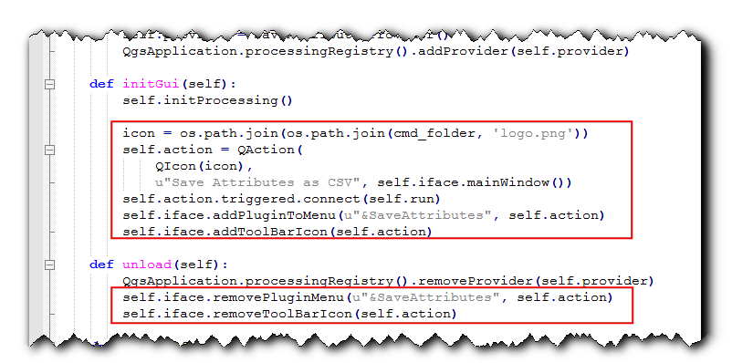
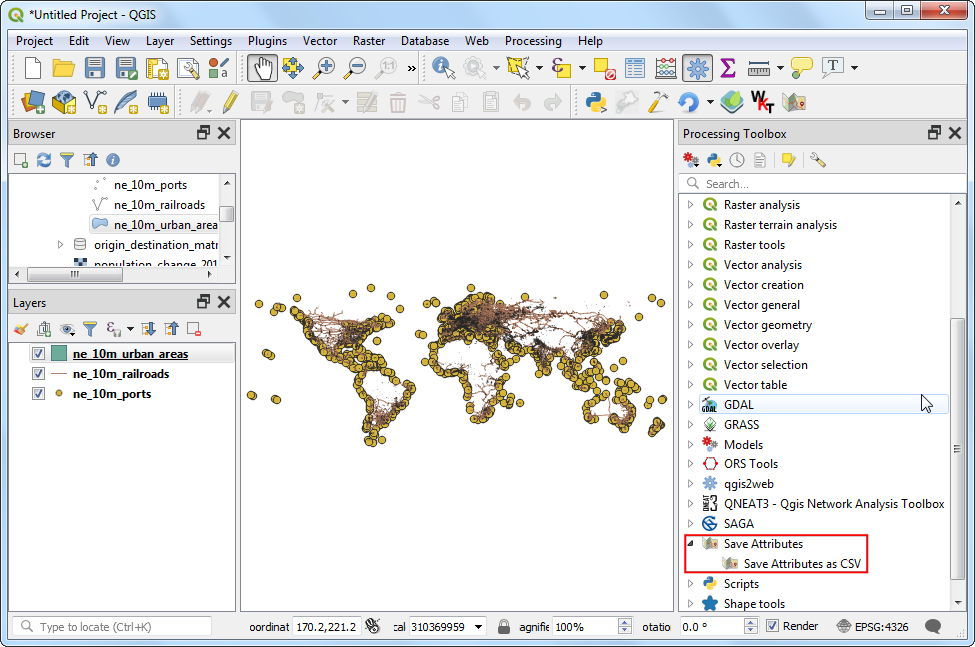

Ujaval Gandhi
Ujaval GandhiBuilding a Processing Plugin (QGIS3)¶
In the previous tutorial Building a Python Plugin (QGIS3), you learnt how to create a python plugin - including the user interface and custom logic for processing the data. While these type of plugins are useful, it puts the burden of designing the user interface on the plugin author. This results in each plugin having different ways to interact with it - which is confusing to the users. Also, regular plugins do not interact with another parts of QGIS. For example, you cannot use the plugin functionality from another algorithm. If the plugin that you want to write is primarily for analysis, and the user interaction that you want is limited to letting the user pick inputs and outputs, there is a much easier and preferred way to write plugins using the Processing Framework. It removes the need for you to design the user interface - simplifying the process. The built-in processing library creates a standard processing interface depending on your inputs that looks and behaves just like any other processing algorithm in QGIS. It also seamlessly integrates with rest of the Processing framework - so your plugin algorithms can be used in batch processing, graphical modeler, called from python console etc.
Overview of the Task¶
We will re-implement a simple plugin from the tutorial Building a Python Plugin (QGIS3) as a processing plugin. It will result in a new processing provider called Save Attributes and an algorithm Save Attributes as CSV that will allow users to pick a vector layer and write its attributes to a CSV file.
Get the Tools¶
A Text Editor or a Python IDE¶
Any kind of software development requires a good text editor. If you already have a favorite text editor or an IDE (Integrated Development Environment), you may use it for this tutorial. Otherwise, each platform offers a wide variety of free or paid options for text editors. Choose the one that fits your needs.
This tutorial uses Notepad++ editor on Windows.
Windows
Notepad++ is a good free editor for windows. Download and install the Notepad++ editor.
Примечание
If you are using Notepad++, makes sure to go to and enable Replace by space. Python is very sensitive about whitespace and this setting will ensure tabs and spaces are treated properly.
Plugin Builder plugin¶
There is a helpful QGIS plugin named Plugin Builder which creates all the necessary files and the boilerplate code for a plugin. Find and install the Plugin Builder plugin. See Использование модулей расширения for more details on how to install plugins.
Plugins Reloader plugin¶
This is another helper plugin which allows iterative development of plugins. Using this plugin, you can change your plugin code and have it reflected in QGIS without having to restart QGIS every time. Find and install the Plugin Reloader plugin. See Использование модулей расширения for more details on how to install plugins.
Примечание
Plugin Reloader is an experimental plugin. Make sure you have checked Show also experimental plugins in Plugin Manager settings if you cannot find it.
Procedure¶
Open QGIS. Go to .

You will see the QGIS Plugin Builder dialog with a form. You can fill the form with details relating to our plugin. The Class name will be the name of the Python Class containing the logic of the plugin. This will also be the name of the folder containing all the plugin files. Enter
SaveAttributesas the class name. The Plugin name is the name under which your plugin will appear in the Plugin Manager. Enter the name asSave Attributes (Processing). Add a description in the Description field. The Module name will be the name of the main python file for the plugin. Enter it assave_attributes_processing. Leave the version numbers as they are and enter your name and email address in the appropriate fields. Click Next.

Enter a brief description of the plugin for the About dialog and click Next.

Select the
Processing Providerfrom the Template selector. The Algorithm name value will be how the users will find the processing algorithm in the Processing Toolox. Enter it asSave Attributes as CSV. Leave the Algorithm group blank. Enter the Provider name asSave Attributes. Enter a description in the Provider description field. Click Next.

Plugin builder will prompt you for the type of files to generate. Keep the default selection and click Next.

As we do not intend to publish the plugin, you may leave the Bug tracker, Repository and Home page values to default. Check the Flag the plugin as experimental box at the bottom and click Next.

You will be prompted to choose a directory for your plugin. For now, save it to a directory you can locate easily on your computer and click Generate.

Next, press the generate button. You will see a confirmation dialog once your plugin template is created.

Примечание
You may get a prompt saying that pyrcc5 is not found in the path. You can ignore this message.
Plugins in QGIS are stored in a special folder. We must copy our plugin directory to that folder before it can be used. In QGIS, locate your current profile folder by going to .

In the profile folder, copy the plugin folder to subfolder.

Now we are ready to have a first look at the brand new plugin we created. Close QGIS and launch it again. Go to and enable the
Save Attributes (Processing)plugin in the Installed tab.

Go to . You will notice that there is a new provider at the bottom called
Save Attributes. Expand it to find an algorithm namedSave Attributes as CSV. Double-click to launch it.

You will notice a familiar processing algorithm dialog with a dropdown for an input layer and a selector for an output layer. We will now customize this dialog to suit our needs. Close this dialog.

Go to the plugin directory and load the file
save_attributes_processing_algorithm.pyin a text editor. For our plugin, we take a vector layer as an input and write out a CSV file as output. So instead of importingQgsProcessingParameterFeatureSinkas output - which is for vector layer - addQgsProcessingParameterFileDestinationwhich is for a file.from qgis.core import (QgsProcessing, QgsFeatureSink, QgsProcessingAlgorithm, QgsProcessingParameterFeatureSource, QgsProcessingParameterFileDestination)
Next, scroll down and define the output parameter under
initAlgorithm()method with the following code.self.addParameter( QgsProcessingParameterFileDestination( self.OUTPUT, self.tr('Output File'), 'CSV files (*.csv)', ) )


Let’s reload our plugin so we can see the changes in the dialog window. Go to . Select
save_attributes_processingin the Configure Plugin reloader dialog.

Click the Reload plugin button to load the latest version of the plugin. To test this new functionality, we must load some layers in QGIS. After you have loaded some layers, launch the algorithm. You will see the output is changed to a file instead of a layer.

Let’s add some logic to the algorithm that takes the selected vector layer and writes the attributes to a CSV file. The explanation for this code can be found in Getting Started With Python Programming (QGIS3). Notable difference here is the counter that helps show the progress of the processing. Add the following code to the
processAlgorithmmethod and save the file.def processAlgorithm(self, parameters, context, feedback): """ Here is where the processing itself takes place. """ source = self.parameterAsSource(parameters, self.INPUT, context) csv = self.parameterAsFileOutput(parameters, self.OUTPUT, context) fieldnames = [field.name() for field in source.fields()] # Compute the number of steps to display within the progress bar and # get features from source total = 100.0 / source.featureCount() if source.featureCount() else 0 features = source.getFeatures() with open(csv, 'w') as output_file: # write header line = ','.join(name for name in fieldnames) + '\n' output_file.write(line) for current, f in enumerate(features): # Stop the algorithm if cancel button has been clicked if feedback.isCanceled(): break # Add a feature in the sink line = ','.join(str(f[name]) for name in fieldnames) + '\n' output_file.write(line) # Update the progress bar feedback.setProgress(int(current * total)) return {self.OUTPUT: csv}

Back in the main QGIS window, reload the plugin by clicking on the Reload plugin button. Launch the algorithm. Select a layer for the Input layer. Next, click the … button next to Output file.

Name the output file
test.csvand click Run. The algorithm will run and produce a CSV file at the chosen location.

As mentioned earlier, even though this algorithm comes from a plugin, it integrates very well with the built-in processing tools. To demonstrate this, let’s run this algorithm using the built-in batch processing interface. Right-click the algorithm and select Execute as Batch Process...

You can select multiple inputs and run this algorithm in a batch to produce multiple CSV files in a single run. If you are not familiar with the batch processing interface, see Batch Processing using Processing Framework (QGIS3) for step-by-step instructions.

The plugin is ready and you can ship it in the current form. But we can improve the user experience by making the processing plugin behave like a regular plugin. Using the hybrid approach outlined below, you can add a menu item and a toolbar button. This way, you give the users an easier way to discover and launch the tools that are installed as part of the plugin. We will need an icon for the plugin. Download logo.png and copy it to the plugin directory.

Open the file
save_attributes_processing.py. Add the following imports at top of the file.from qgis.PyQt.QtWidgets import QAction from qgis.PyQt.QtGui import QIcon from qgis.core import QgsProcessingAlgorithm, QgsApplication import processing
Scroll down and modify the
__init__()method to initialize iface.def __init__(self, iface): self.provider = None self.iface = iface
Scroll down further and locate the
initGuimethod. It only contains the code to initialize the processing provider. We will add the code to add a toolbar button and a menu item. We will also need to add code to theunloadmethod, to remove these elements when plugin is removed.def initGui(self): self.initProcessing() icon = os.path.join(os.path.join(cmd_folder, 'logo.png')) self.action = QAction( QIcon(icon), u"Save Attributes as CSV", self.iface.mainWindow()) self.action.triggered.connect(self.run) self.iface.addPluginToMenu(u"&SaveAttributes", self.action) self.iface.addToolBarIcon(self.action) def unload(self): QgsApplication.processingRegistry().removeProvider(self.provider) self.iface.removePluginMenu(u"&SaveAttributes", self.action) self.iface.removeToolBarIcon(self.action)
We have connected the button and the menu item to trigger the
runmethod when clicked. Add a new method at the bottom that uses the helper methodexecAlgorithmDialogto launch the processing algorithm.def run(self): processing.execAlgorithmDialog("Save Attributes:Save Attributes as CSV")
 
Next, we need a minor fix to the
__init__.pyfile in the plugin directory. Open the file and addifaceto the return statement, so the reference to the QGIS interface is passed on to the plugin.

Back in the main QGIS window, reload the plugin by clicking on the Reload plugin button. You will see a new toolbar icon and a menu item under . You can click these to launch the
Save Attributes as CSValgorithm. You will notice that the processing provider and the algorithm in the toolbar still have the default icons. Let’s fix that.

Open the
save_attributes_processing_provider.pyfile from the plugin directory. Add the imports at the top as follows.import os import inspect from qgis.PyQt.QtGui import QIcon
Modify the
iconmethod as follows to add the custom icon.def icon(self): cmd_folder = os.path.split(inspect.getfile(inspect.currentframe()))[0] icon = QIcon(os.path.join(os.path.join(cmd_folder, 'logo.png'))) return icon


Next, open the
save_attributes_processing_algorithm.pyfile. Add the imports at the top as follows.import os import inspect from qgis.PyQt.QtGui import QIcon
Add a new
iconmethod with the following code.def icon(self): cmd_folder = os.path.split(inspect.getfile(inspect.currentframe()))[0] icon = QIcon(os.path.join(os.path.join(cmd_folder, 'logo.png'))) return icon


{kind=link}
Reload the plugin and you will see the provider and algorithm both have our custom icon.

You can zip the plugin directory and share it with your users. They can unzip the contents to their plugin directory and try out your plugin. If this was a real plugin, you would upload it to the QGIS Plugin Repository so that all QGIS users will be able to find and download your plugin.
Примечание
This plugin is for demonstration purpose only. Do not publish this plugin or upload it to the QGIS plugin repository.
Below are the full source file as a reference.
__init__.py
# -*- coding: utf-8 -*-
"""
/***************************************************************************
SaveAttributes
A QGIS plugin
This plugin adds an algorithm to save attributes of selected layer as a CSV file
Generated by Plugin Builder: http://g-sherman.github.io/Qgis-Plugin-Builder/
-------------------
begin : 2019-09-18
copyright : (C) 2019 by Ujaval Gandhi
email : ujaval@spatialthoughts.com
***************************************************************************/
/***************************************************************************
* *
* This program is free software; you can redistribute it and/or modify *
* it under the terms of the GNU General Public License as published by *
* the Free Software Foundation; either version 2 of the License, or *
* (at your option) any later version. *
* *
***************************************************************************/
This script initializes the plugin, making it known to QGIS.
"""
__author__ = 'Ujaval Gandhi'
__date__ = '2019-09-18'
__copyright__ = '(C) 2019 by Ujaval Gandhi'
# noinspection PyPep8Naming
def classFactory(iface): # pylint: disable=invalid-name
"""Load SaveAttributes class from file SaveAttributes.
:param iface: A QGIS interface instance.
:type iface: QgsInterface
"""
#
from .save_attributes_processing import SaveAttributesPlugin
return SaveAttributesPlugin(iface)
save_attributes_processing.py
# -*- coding: utf-8 -*-
"""
/***************************************************************************
SaveAttributes
A QGIS plugin
This plugin adds an algorithm to save attributes of selected layer as a CSV file
Generated by Plugin Builder: http://g-sherman.github.io/Qgis-Plugin-Builder/
-------------------
begin : 2019-09-18
copyright : (C) 2019 by Ujaval Gandhi
email : ujaval@spatialthoughts.com
***************************************************************************/
/***************************************************************************
* *
* This program is free software; you can redistribute it and/or modify *
* it under the terms of the GNU General Public License as published by *
* the Free Software Foundation; either version 2 of the License, or *
* (at your option) any later version. *
* *
***************************************************************************/
"""
__author__ = 'Ujaval Gandhi'
__date__ = '2019-09-18'
__copyright__ = '(C) 2019 by Ujaval Gandhi'
# This will get replaced with a git SHA1 when you do a git archive
__revision__ = '$Format:%H$'
import os
import sys
import inspect
from qgis.PyQt.QtWidgets import QAction
from qgis.PyQt.QtGui import QIcon
from qgis.core import QgsProcessingAlgorithm, QgsApplication
import processing
from .save_attributes_processing_provider import SaveAttributesProvider
cmd_folder = os.path.split(inspect.getfile(inspect.currentframe()))[0]
if cmd_folder not in sys.path:
sys.path.insert(0, cmd_folder)
class SaveAttributesPlugin(object):
def __init__(self, iface):
self.provider = None
self.iface = iface
def initProcessing(self):
"""Init Processing provider for QGIS >= 3.8."""
self.provider = SaveAttributesProvider()
QgsApplication.processingRegistry().addProvider(self.provider)
def initGui(self):
self.initProcessing()
icon = os.path.join(os.path.join(cmd_folder, 'logo.png'))
self.action = QAction(
QIcon(icon),
u"Save Attributes as CSV", self.iface.mainWindow())
self.action.triggered.connect(self.run)
self.iface.addPluginToMenu(u"&SaveAttributes", self.action)
self.iface.addToolBarIcon(self.action)
def unload(self):
QgsApplication.processingRegistry().removeProvider(self.provider)
self.iface.removePluginMenu(u"&SaveAttributes", self.action)
self.iface.removeToolBarIcon(self.action)
def run(self):
processing.execAlgorithmDialog("Save Attributes:Save Attributes as CSV")
save_attributes_processing_algorithm.py
# -*- coding: utf-8 -*-
"""
/***************************************************************************
SaveAttributes
A QGIS plugin
This plugin adds an algorithm to save attributes of selected layer as a CSV file
Generated by Plugin Builder: http://g-sherman.github.io/Qgis-Plugin-Builder/
-------------------
begin : 2019-09-18
copyright : (C) 2019 by Ujaval Gandhi
email : ujaval@spatialthoughts.com
***************************************************************************/
/***************************************************************************
* *
* This program is free software; you can redistribute it and/or modify *
* it under the terms of the GNU General Public License as published by *
* the Free Software Foundation; either version 2 of the License, or *
* (at your option) any later version. *
* *
***************************************************************************/
"""
__author__ = 'Ujaval Gandhi'
__date__ = '2019-09-18'
__copyright__ = '(C) 2019 by Ujaval Gandhi'
# This will get replaced with a git SHA1 when you do a git archive
__revision__ = '$Format:%H$'
import os
import inspect
from qgis.PyQt.QtGui import QIcon
from qgis.PyQt.QtCore import QCoreApplication
from qgis.core import (QgsProcessing,
QgsFeatureSink,
QgsProcessingAlgorithm,
QgsProcessingParameterFeatureSource,
QgsProcessingParameterFileDestination)
class SaveAttributesAlgorithm(QgsProcessingAlgorithm):
"""
This is an example algorithm that takes a vector layer and
creates a new identical one.
It is meant to be used as an example of how to create your own
algorithms and explain methods and variables used to do it. An
algorithm like this will be available in all elements, and there
is not need for additional work.
All Processing algorithms should extend the QgsProcessingAlgorithm
class.
"""
# Constants used to refer to parameters and outputs. They will be
# used when calling the algorithm from another algorithm, or when
# calling from the QGIS console.
OUTPUT = 'OUTPUT'
INPUT = 'INPUT'
def initAlgorithm(self, config):
"""
Here we define the inputs and output of the algorithm, along
with some other properties.
"""
# We add the input vector features source. It can have any kind of
# geometry.
self.addParameter(
QgsProcessingParameterFeatureSource(
self.INPUT,
self.tr('Input layer'),
[QgsProcessing.TypeVectorAnyGeometry]
)
)
# We add a file output of type CSV.
self.addParameter(
QgsProcessingParameterFileDestination(
self.OUTPUT,
self.tr('Output File'),
'CSV files (*.csv)',
)
)
def processAlgorithm(self, parameters, context, feedback):
"""
Here is where the processing itself takes place.
"""
source = self.parameterAsSource(parameters, self.INPUT, context)
csv = self.parameterAsFileOutput(parameters, self.OUTPUT, context)
fieldnames = [field.name() for field in source.fields()]
# Compute the number of steps to display within the progress bar and
# get features from source
total = 100.0 / source.featureCount() if source.featureCount() else 0
features = source.getFeatures()
with open(csv, 'w') as output_file:
# write header
line = ','.join(name for name in fieldnames) + '\n'
output_file.write(line)
for current, f in enumerate(features):
# Stop the algorithm if cancel button has been clicked
if feedback.isCanceled():
break
# Add a feature in the sink
line = ','.join(str(f[name]) for name in fieldnames) + '\n'
output_file.write(line)
# Update the progress bar
feedback.setProgress(int(current * total))
return {self.OUTPUT: csv}
def name(self):
"""
Returns the algorithm name, used for identifying the algorithm. This
string should be fixed for the algorithm, and must not be localised.
The name should be unique within each provider. Names should contain
lowercase alphanumeric characters only and no spaces or other
formatting characters.
"""
return 'Save Attributes as CSV'
def displayName(self):
"""
Returns the translated algorithm name, which should be used for any
user-visible display of the algorithm name.
"""
return self.tr(self.name())
def group(self):
"""
Returns the name of the group this algorithm belongs to. This string
should be localised.
"""
return self.tr(self.groupId())
def groupId(self):
"""
Returns the unique ID of the group this algorithm belongs to. This
string should be fixed for the algorithm, and must not be localised.
The group id should be unique within each provider. Group id should
contain lowercase alphanumeric characters only and no spaces or other
formatting characters.
"""
return ''
def tr(self, string):
return QCoreApplication.translate('Processing', string)
def icon(self):
"""
Should return a QIcon which is used for your provider inside
the Processing toolbox.
"""
cmd_folder = os.path.split(inspect.getfile(inspect.currentframe()))[0]
icon = QIcon(os.path.join(os.path.join(cmd_folder, 'logo.png')))
return icon
def createInstance(self):
return SaveAttributesAlgorithm()
save_attributes_processing_provider.py
# -*- coding: utf-8 -*-
"""
/***************************************************************************
SaveAttributes
A QGIS plugin
This plugin adds an algorithm to save attributes of selected layer as a CSV file
Generated by Plugin Builder: http://g-sherman.github.io/Qgis-Plugin-Builder/
-------------------
begin : 2019-09-18
copyright : (C) 2019 by Ujaval Gandhi
email : ujaval@spatialthoughts.com
***************************************************************************/
/***************************************************************************
* *
* This program is free software; you can redistribute it and/or modify *
* it under the terms of the GNU General Public License as published by *
* the Free Software Foundation; either version 2 of the License, or *
* (at your option) any later version. *
* *
***************************************************************************/
"""
__author__ = 'Ujaval Gandhi'
__date__ = '2019-09-18'
__copyright__ = '(C) 2019 by Ujaval Gandhi'
# This will get replaced with a git SHA1 when you do a git archive
__revision__ = '$Format:%H$'
import os
import inspect
from qgis.PyQt.QtGui import QIcon
from qgis.core import QgsProcessingProvider
from .save_attributes_processing_algorithm import SaveAttributesAlgorithm
class SaveAttributesProvider(QgsProcessingProvider):
def __init__(self):
"""
Default constructor.
"""
QgsProcessingProvider.__init__(self)
def unload(self):
"""
Unloads the provider. Any tear-down steps required by the provider
should be implemented here.
"""
pass
def loadAlgorithms(self):
"""
Loads all algorithms belonging to this provider.
"""
self.addAlgorithm(SaveAttributesAlgorithm())
# add additional algorithms here
# self.addAlgorithm(MyOtherAlgorithm())
def id(self):
"""
Returns the unique provider id, used for identifying the provider. This
string should be a unique, short, character only string, eg "qgis" or
"gdal". This string should not be localised.
"""
return 'Save Attributes'
def name(self):
"""
Returns the provider name, which is used to describe the provider
within the GUI.
This string should be short (e.g. "Lastools") and localised.
"""
return self.tr('Save Attributes')
def icon(self):
"""
Should return a QIcon which is used for your provider inside
the Processing toolbox.
"""
cmd_folder = os.path.split(inspect.getfile(inspect.currentframe()))[0]
icon = QIcon(os.path.join(os.path.join(cmd_folder, 'logo.png')))
return icon
def longName(self):
"""
Returns the a longer version of the provider name, which can include
extra details such as version numbers. E.g. "Lastools LIDAR tools
(version 2.2.1)". This string should be localised. The default
implementation returns the same string as name().
"""
return self.name()
If you want to give feedback or share your experience with this tutorial, please comment below. (requires GitHub account)